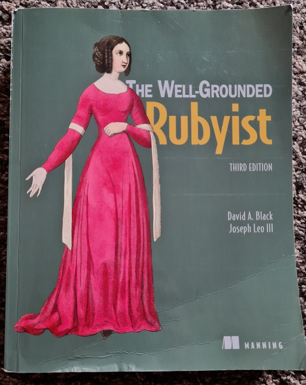

Key Takeaways from The Well-Grounded Rubyist
Published at 2025-10-11T15:25:14+03:00
Some time ago, I wrote about my journey into Ruby and how "The Well-Grounded Rubyist" helped me to get a better understanding of the language. I took a lot of notes while reading the book, and I think it's time to share some of them. This is not a comprehensive review, but rather a collection of interesting tidbits and concepts that stuck with me.
Table of Contents
My first post about the book.

The Object Model
One of the most fascinating aspects of Ruby is its object model. The book does a great job of explaining the details.
Everything is an object (almost)
In Ruby, most things are objects. This includes numbers, strings, and even classes themselves. This has some interesting consequences. For example, you can't use i++ like in C or Java. Integers are immutable objects. 1 is always the same object. 1 + 1 returns a new object, 2.
The self keyword
There is always a current object, self. If you call a method without an explicit receiver, it's called on self. For example, puts "hello" is actually self.puts "hello".
# At the top level, self is the main object
p self
# => main
p self.class
# => Object
def foo
# Inside a method, self is the object that received the call
p self
end
foo
# => main
This code demonstrates how self changes depending on the context. At the top level, it's main, an instance of Object. When foo is called without a receiver, it's called on main.
Singleton Methods
You can add methods to individual objects. These are called singleton methods.
obj = "a string"
def obj.shout
self.upcase + "!"
end
p obj.shout
# => "A STRING!"
obj2 = "another string"
# obj2.shout would raise a NoMethodError
Here, the shout method is only available on the obj object. This is a powerful feature for adding behavior to specific instances.
Classes are Objects
Classes themselves are objects, instances of the Class class. This means you can create classes dynamically.
MyClass = Class.new do
def say_hello
puts "Hello from a dynamically created class!"
end
end
instance = MyClass.new
instance.say_hello
# => Hello from a dynamically created class!
This shows how to create a new class and assign it to a constant. This is what happens behind the scenes when you use the class keyword.
Control Flow and Methods
The book clarified many things about how methods and control flow work in Ruby.
case and the === operator
The case statement is more powerful than I thought. It uses the === (threequals or case equality) operator for comparison, not ==. Different classes can implement === in their own way.
# For ranges, it checks for inclusion
p (1..5) === 3 # => true
# For classes, it checks if the object is an instance of the class
p String === "hello" # => true
# For regexes, it checks for a match
p /llo/ === "hello" # => true
def check(value)
case value
when String
"It's a string"
when (1..10)
"It's a number between 1 and 10"
else
"Something else"
end
end
p check(5) # => "It's a number between 1 and 10"
Blocks and yield
Blocks are a cornerstone of Ruby. You can pass them to methods to customize their behavior. The yield keyword is used to call the block.
def my_iterator
puts "Entering the method"
yield
puts "Back in the method"
yield
end
my_iterator { puts "Inside the block" }
# Entering the method
# Inside the block
# Back in the method
# Inside the block
This simple iterator shows how yield transfers control to the block. You can also pass arguments to yield and get a return value from the block.
def with_return
result = yield(5)
puts "The block returned #{result}"
end
with_return { |n| n * 2 }
# => The block returned 10
This demonstrates passing an argument to the block and using its return value.
Fun with Data Types
Ruby's core data types are full of nice little features.
Symbols
Symbols are like immutable strings. They are great for keys in hashes because they are unique and memory-efficient.
# Two strings with the same content are different objects
p "foo".object_id
p "foo".object_id
# Two symbols with the same content are the same object
p :foo.object_id
p :foo.object_id
# Modern hash syntax uses symbols as keys
my_hash = { name: "Paul", language: "Ruby" }
p my_hash[:name] # => "Paul"
This code highlights the difference between strings and symbols and shows the convenient hash syntax.
Arrays and Hashes
Arrays and hashes have a rich API. The %w and %i shortcuts for creating arrays of strings and symbols are very handy.
# Array of strings
p %w[one two three]
# => ["one", "two", "three"]
# Array of symbols
p %i[one two three]
# => [:one, :two, :three]
A quick way to create arrays. You can also retrieve multiple values at once.
arr = [10, 20, 30, 40, 50]
p arr.values_at(0, 2, 4)
# => [10, 30, 50]
hash = { a: 1, b: 2, c: 3 }
p hash.values_at(:a, :c)
# => [1, 3]
The values_at method is a concise way to get multiple elements.
Final Thoughts
These are just a few of the many things I learned from "The Well-Grounded Rubyist". The book gave me a much deeper appreciation for the language and its design. If you are a Ruby programmer, I highly recommend it. Meanwhile, I also read the book "Programming Ruby 3.3", just I didn't have time to process my notes there yet.
E-Mail your comments to paul@nospam.buetow.org :-)
Other Ruby-related posts:
2026-03-02 RCM: The Ruby Configuration Management DSL
2025-10-11 Key Takeaways from The Well-Grounded Rubyist (You are currently reading this)
2021-07-04 The Well-Grounded Rubyist
Back to the main site